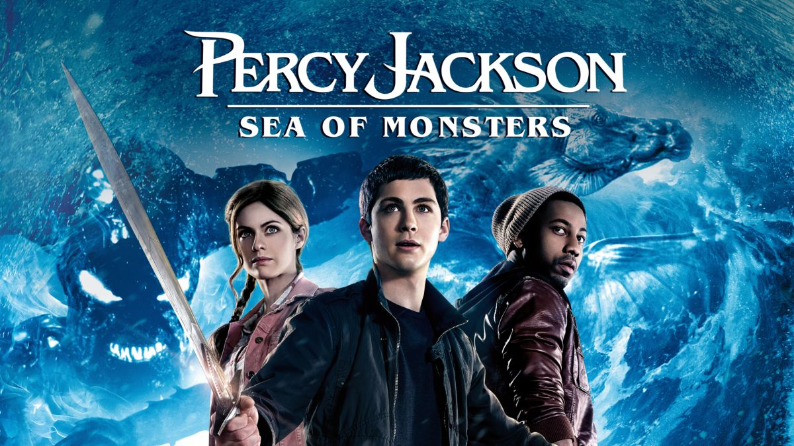

Though Percy (Logan Lerman), the half-human son of Greek god Poseidon, once saved the world, lately he's been feeling less than heroic. However, he doesn't have much time to brood -- the enchanted borders that protect Camp Half-Blood are dissolving, and a horde of mythical beasts threatens the demigods' sanctuary. In order to save Camp Half-Blood, Percy and his friends embark on a journey to the Sea of Monsters -- aka the Bermuda Triangle -- to find the magical Golden Fleece.>
